Juice Drinkers describes itself as "a place created by youthful and open-minded people". For ten years, it has been serving freshly squeezed juices at its popular spot. Hugmun was approached to refresh its brand. "Our focus was minimalism and simplicity with a playful twist," says Joanna Ziemowska of the studio.
One crucial element to consider was its new approach to materials. To protect the environment, Juice Drinkers has introduced returnable glass bottles and recyclable paper packaging. Joanna adds: 'We designed a packaging system, created a series of photos and introduced elements of the identity into their new venue. The summary of the entire identification is shown in the series of energetic photos reflecting the free, urban character of the brand.'
The classic Poppins font, which appears in all communication materials, works together with a series of small, original, hand-drawn illustrations. 'The clean, structured, black and white packaging system is the perfect setting for the joyful colourful juices,' Joanna says.”